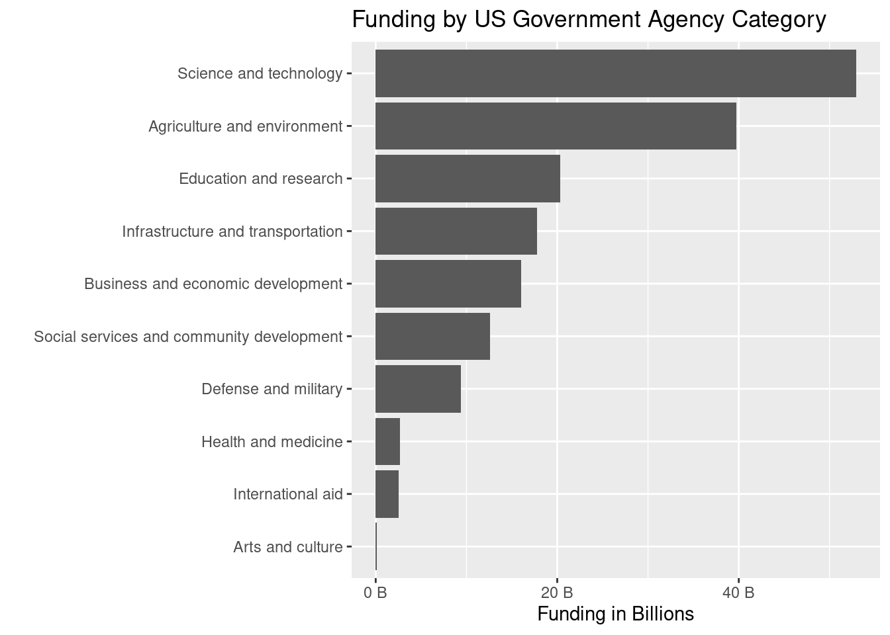

library(tidyverse)
library(DescTools)
library(keyring)
library(httr)
library(jsonlite)
library(numform)
library(scales)
library(snakecase)
grants <- readr::read_csv('https://raw.githubusercontent.com/rfordatascience/tidytuesday/master/data/2023/2023-10-03/grants.csv')
grant_opportunity_details <- readr::read_csv('https://raw.githubusercontent.com/rfordatascience/tidytuesday/master/data/2023/2023-10-03/grant_opportunity_details.csv')
# Load cached ChatGPT results from disk
load('categories.Rdata')
load('agencies_categorized.Rdata')GPT is a powerful new tool in the Data Science toolkit. Used correctly, it can increase productivity while decreasing the “drudgery” of boring tasks like data cleaning. In this blog post, I use GPT to classify US grant-funding agencies into categories using government agency names. For this task I’ll be using this week’s Tidy Tuesday dataset: US Government Grant Opportunities.
Load libraries and data
GPT function
I’ll define a function for querying ChatGPT (source). This function will use GPT-4 as the model, and the temperature will be set to 0. Temperature defines how stable the responses will be. A temperature closer to 1 is better for creative tasks where high variability is desired, like creative writing. A temperature of 0 is more “boring” but also more stable. This is desirable for classification tasks.
# ChatGPT function
chatGPT <- function(prompt,
modelName = "gpt-4",
temperature = 0,
apiKey = keyring::key_get('openai')) {
response <- POST(
url = "https://api.openai.com/v1/chat/completions",
add_headers(Authorization = paste("Bearer", apiKey)),
content_type_json(),
encode = "json",
body = list(
model = modelName,
temperature = temperature,
messages = list(list(
role = "user",
content = prompt
))
)
)
if(status_code(response)>200) {
stop(content(response))
}
trimws(content(response)$choices[[1]]$message$content)
}List of agencies
I’ll generate a distinct list of US government agencies in the dataset, and then format them as a comma-separated string. This will make it easy to append to a prompt string when querying GPT.
agencies <- sort(unique(grants$agency_name))
paste0(agencies,collapse = ', ') -> agencies_strUsing GPT for classification
I’ll split the classification task into two parts:
- Give GPT the full list of agency names, and ask it to come up with N categories
- For each of the N categories, give GPT the full list of agency names, and ask it to identify the agencies that belong in each category
1. Ask it to come up with categories
First I’ll ask GPT to define a fixed number of categories. Somewhat arbitrarily, I’ll ask for 10.
if(!exists('categories')){
query1 <-
paste0(
"I'm going to present a list of US agencies.
Your task is to identify the 10 best categories
to represent them. The categories should be based
on activities they're involved with, such as Defense
and Military, Science and Technology, Arts and Culture,
Health and Medicine, Education, International Aid,
etc... I want you to give me the list of categories
as a comma-separated list.
```", agencies_str, "```"
)
gpt_categories <- chatGPT(query1)
categories <- trimws(strsplit(gpt_categories, ",")[[1]])
# Save to disk
save(categories, file = 'categories.Rdata')
}
print(categories) [1] "Defense and Military"
[2] "Science and Technology"
[3] "Health and Medicine"
[4] "International Aid"
[5] "Education and Research"
[6] "Agriculture and Environment"
[7] "Infrastructure and Transportation"
[8] "Business and Economic Development"
[9] "Arts and Culture"
[10] "Social Services and Community Development"2. Ask it to classify agencies using agency names and categories
Next, using the agency names and categories generated above I’ll ask GPT to do classification. First, I’ll define a function that takes a category as input and runs a query against GPT asking it to put the agencies into the provided category, returning a list of agencies that it put in that category. Although I could ask GPT to classify agencies using all categories in a single query, I expect this would be less reliable than tackling each category separately. One of the trade-offs here is that I won’t get mutual exclusivity of the categories, since GPT won’t know how it’s already classified agencies. For this analysis, let’s assume I don’t want mutual exclusivity.
get_agencies_in_category <- function(category) {
query2 <-paste0(
"I'm going to present a comma-separated list of US agencies,
delimited by triple backticks (```), and a single category to
which some of the agencies belong, delimited by triple hashtags (###).
Your task is to provide a comma-separated list of agency names that
belong in the category provided.
```", agencies_str, "```
###", category, "###"
)
gpt_query2_response <- chatGPT(query2)
# Return as a vector
trimws(strsplit(gpt_query2_response, ",")[[1]])
}Using the function above, I’ll query GPT for each of the categories, saving the results into a list called agencies_categorized.
if(!exists('agencies_categorized')){
agencies_categorized <- list()
for (category in categories){
if(category != 'Other'){
agencies_categorized[[category]] <- get_agencies_in_category(category)
}
}
# Save to disk
save(agencies_categorized, file = 'agencies_categorized.Rdata')
}
print(agencies_categorized)$`Defense and Military`
[1] "69A345 Office of the Under Secretary for Policy"
[2] "69A350 OSDBU"
[3] "69A355 Research and Technology"
[4] "ACC APG - Natick"
[5] "ACC-APG-Aberdeen Division A"
[6] "ACC-APG-Belvoir"
[7] "ACC-APG-Detrick"
[8] "ACC-APG-Edgewood"
[9] "ACC-APG-Fort Huachuca"
[10] "Air Force -- Materiel Command"
[11] "Air Force -- Research Lab"
[12] "Air Force Academy"
[13] "Air Force Office of Scientific Research"
[14] "Alaska District"
[15] "Army Contracting Command - Benet Laboratories"
[16] "Army Contracting Command - New Jersey"
[17] "Army Contracting Command Rock Island"
[18] "Bureau of Diplomatic Security"
[19] "Bureau of International Security-Nonproliferation"
[20] "Bureau of Political-Military Affairs - GPI"
[21] "Bureau of Political-Military Affairs - WRA"
[22] "DARPA - Biological Technologies Office"
[23] "DARPA - Defense Sciences Office"
[24] "DARPA - Information Innovation Office"
[25] "DARPA - Information Processing Technology Office"
[26] "DARPA - Microsystems Technology Office"
[27] "DARPA - Strategic Technology Office"
[28] "DARPA - Tactical Technology Office"
[29] "DARPA - Transformational Convergence Technology"
[30] "DARPA-MTO-BAA-09-25"
[31] "Defense Advanced Research Projects Agency"
[32] "Defense Health Agency"
[33] "Defense Intelligence Agency"
[34] "Defense Logistics Agency"
[35] "Defense Threat Reduction Agency"
[36] "Department of Defense"
[37] "Dept of the Army -- Materiel Command"
[38] "Dept. of the Army -- Corps of Engineers"
[39] "Dept. of the Army -- Space & Missle Defense Comman"
[40] "Dept. of the Army -- USAMRAA"
[41] "DoD Education Activity"
[42] "DOT - FAA Aviation Research Grants"
[43] "DOT - FAA Centers of Excellence"
[44] "DOT Federal Aviation Administration"
[45] "Engineer Research and Development Center"
[46] "Fort Worth District"
[47] "Kansas City District"
[48] "Missile Defense Agency"
[49] "Mission and Install. Cmd. JBSA Ft. Sam Houston"
[50] "NAVAIR"
[51] "Naval Air Warfare Center Aircraft Div. Lakehurst"
[52] "NAVAL FACILITIES ENGINEERING COMMAND"
[53] "Naval Facilities Engineering Command Southwest"
[54] "Naval Information Warfare Center Pacific"
[55] "NAVAL MEDICAL LOGISTICS COMMAND"
[56] "Naval Research Laboratory"
[57] "Naval Supply Systems Command"
[58] "Naval Surface Warfare Center - Carderock"
[59] "NAVFAC Atlantic"
[60] "NAVFAC Washington DC"
[61] "NCA Contracting"
[62] "NEA Cooperative Agreements Office"
[63] "NSWC - CRANE"
[64] "NSWC Indian Head"
[65] "NUWC Division Keyport"
[66] "Office of Local Defense Community Cooperation"
[67] "Office of Naval Research"
[68] "Office of the Director of National Intelligence"
[69] "Omaha District"
[70] "Savannah District"
[71] "Seattle District"
[72] "SPAWAR SYSTEMS CENTER"
[73] "U.S. Dept. of Treasury RESTORE Act Program"
[74] "U.S. Mission to NATO"
[75] "United States Coast Guard"
[76] "United States Marine Corps"
[77] "USAF 347 Contracting Squadron"
[78] "Washington Headquarters Services"
$`Science and Technology`
[1] "69A345 Office of the Under Secretary for Policy"
[2] "69A355 Research and Technology"
[3] "Advanced Research Projects Agency Energy"
[4] "Advanced Research Projects Agency for Health"
[5] "Agency for Health Care Research and Quality"
[6] "Agricultural Research Service"
[7] "Air Force -- Research Lab"
[8] "Air Force Office of Scientific Research"
[9] "Army Contracting Command - Benet Laboratories"
[10] "Bureau of Oceans - Int. Environmental - Scientific"
[11] "Centers for Disease Control - ATSDR"
[12] "Centers for Disease Control - CFA"
[13] "Centers for Disease Control - CGH"
[14] "Centers for Disease Control - CSELS"
[15] "Centers for Disease Control - NCBDDD"
[16] "Centers for Disease Control - NCCDPHP"
[17] "Centers for Disease Control - NCEH"
[18] "Centers for Disease Control - NCEZID"
[19] "Centers for Disease Control - NCHHSTP"
[20] "Centers for Disease Control - NCHS"
[21] "Centers for Disease Control - NCIPC"
[22] "Centers for Disease Control - NCIRD"
[23] "Centers for Disease Control - NIOSH"
[24] "Centers for Disease Control - OD"
[25] "Centers for Disease Control - OPHPR"
[26] "Centers for Disease Control - OSTLTS"
[27] "Centers for Disease Control and Prevention"
[28] "Centers for Disease Control and Prevention - ERA"
[29] "DARPA - Biological Technologies Office"
[30] "DARPA - Defense Sciences Office"
[31] "DARPA - Information Innovation Office"
[32] "DARPA - Information Processing Technology Office"
[33] "DARPA - Microsystems Technology Office"
[34] "DARPA - Strategic Technology Office"
[35] "DARPA - Tactical Technology Office"
[36] "DARPA - Transformational Convergence Technology"
[37] "Defense Advanced Research Projects Agency"
[38] "Defense Health Agency"
[39] "Defense Intelligence Agency"
[40] "Defense Threat Reduction Agency"
[41] "Department of Energy"
[42] "DoD Education Activity"
[43] "DOT - FAA Aviation Research Grants"
[44] "DOT - FAA Centers of Excellence"
[45] "DOT Federal Aviation Administration"
[46] "Economic Research Service"
[47] "Engineer Research and Development Center"
[48] "Environmental Protection Agency"
[49] "FAA - Aviation Next Gen"
[50] "FAA-COE-AJFE"
[51] "FAA-COE-GA"
[52] "FAA-COE-TTHP"
[53] "Food and Drug Administration"
[54] "Geological Survey"
[55] "Health Resources and Services Administration"
[56] "Indian Health Service"
[57] "Institute of Museum and Library Services"
[58] "National Aeronautics and Space Administration"
[59] "National Energy Technology Laboratory"
[60] "National Geospatial-Intelligence Agency"
[61] "National Highway Traffic Safety Administration"
[62] "National Institute of Food and Agriculture"
[63] "National Institute of Justice"
[64] "National Institute of Standards and Technology"
[65] "National Institutes of Health"
[66] "National Oceanic and Atmospheric Administration"
[67] "National Park Service"
[68] "National Science Foundation"
[69] "National Telecommunications and Information Admini"
[70] "Naval Research Laboratory"
[71] "Naval Supply Systems Command"
[72] "Naval Surface Warfare Center - Carderock"
[73] "NNSA"
[74] "Nuclear Regulatory Commission"
[75] "NUWC Division Keyport"
[76] "Oak Ridge Office"
[77] "Office of Science"
[78] "Office of the Assistant Secretary for Health"
[79] "Office of the Director of National Intelligence"
[80] "Office of the National Coordinator"
[81] "Pipeline and Hazardous Materials Safety Admin"
[82] "Risk Management Agency"
[83] "Science and Technology Directorate"
[84] "Substance Abuse and Mental Health Services Admin"
[85] "Substance Abuse and Mental Health Services Adminis"
[86] "Uniformed Services Univ. of the Health Sciences"
[87] "USUHS Medical - Non- Research Projects"
[88] "USUHS Medical Research Projects"
[89] "USAID"
[90] "Woodrow Wilson Center"
$`Health and Medicine`
[1] "Administration for Children & Families - ACYF/FYSB"
[2] "Administration for Children and Families"
[3] "Administration for Children and Families - ACYF/CB"
[4] "Administration for Children and Families - ANA"
[5] "Administration for Children and Families - OCC"
[6] "Administration for Children and Families - OCS"
[7] "Administration for Children and Families - OCSE"
[8] "Administration for Children and Families - OFA"
[9] "Administration for Children and Families - OHS"
[10] "Administration for Children and Families - OHSEPR"
[11] "Administration for Children and Families - OPRE"
[12] "Administration for Children and Families - ORR"
[13] "Administration for Children and Families-IOAS-OTIP"
[14] "Administration for Community Living"
[15] "Administration on Aging"
[16] "Advanced Research Projects Agency for Health"
[17] "Agency for Health Care Research and Quality"
[18] "Centers for Disease Control - ATSDR"
[19] "Centers for Disease Control - CFA"
[20] "Centers for Disease Control - CGH"
[21] "Centers for Disease Control - CSELS"
[22] "Centers for Disease Control - NCBDDD"
[23] "Centers for Disease Control - NCCDPHP"
[24] "Centers for Disease Control - NCEH"
[25] "Centers for Disease Control - NCEZID"
[26] "Centers for Disease Control - NCHHSTP"
[27] "Centers for Disease Control - NCHS"
[28] "Centers for Disease Control - NCIPC"
[29] "Centers for Disease Control - NCIRD"
[30] "Centers for Disease Control - NIOSH"
[31] "Centers for Disease Control - OD"
[32] "Centers for Disease Control - OPHPR"
[33] "Centers for Disease Control - OSTLTS"
[34] "Centers for Disease Control and Prevention"
[35] "Centers for Disease Control and Prevention - ERA"
[36] "Centers for Medicare & Medicaid Services"
[37] "CMS Consumer Operated and Oriented Plan Program"
[38] "CMS-Consumer Information & Insurance Oversight"
[39] "Defense Health Agency"
[40] "Department of Health and Human Services"
[41] "Food and Drug Administration"
[42] "Health Resources and Services Administration"
[43] "Indian Health Service"
[44] "National Institute of Food and Agriculture"
[45] "National Institutes of Health"
[46] "Office of the Assistant Secretary for Health"
[47] "Office of the National Coordinator"
[48] "Substance Abuse and Mental Health Services Admin"
[49] "Substance Abuse and Mental Health Services Adminis"
[50] "Uniformed Services Univ. of the Health Sciences"
[51] "USUHS Medical - Non- Research Projects"
[52] "USUHS Medical Research Projects"
[53] "VA Office of Mental Health"
[54] "VHA Member Services-Veterans Transportation"
$`International Aid`
[1] "Afghanistan USAID-Kabul"
[2] "Africa Regional Services"
[3] "Agency for International Development"
[4] "Albania USAID-Tirana"
[5] "Armenia USAID-Yerevan"
[6] "Azerbaijan USAID-Baku"
[7] "Bangladesh USAID-Dhaka"
[8] "Benin USAID-Cotonou"
[9] "Bolivia USAID-La Paz"
[10] "Bosnia USAID-Herzegovina"
[11] "Brazil USAID-Brasilia"
[12] "Burma USAID - Rangoon"
[13] "Burundi USAID-Bujumbura"
[14] "Cambodia USAID-Phnom Penh"
[15] "Colombia USAID-Bogota"
[16] "Democratic Republic of the Congo USAID-Kinshasa"
[17] "Dominican Republic USAID-Santo Domingo"
[18] "East Africa USAID-Kenya"
[19] "Ecuador USAID-Quito"
[20] "Egypt USAID-Cairo"
[21] "El Salvador USAID-San Salvador"
[22] "Ethiopia USAID-Addis Ababa"
[23] "Georgia USAID-Tbilisi"
[24] "Ghana USAID-Accra"
[25] "Guatemala USAID-Guatemala City"
[26] "Guinea USAID-Conakry"
[27] "Haiti USAID-Port Au Prince"
[28] "Honduras USAID-Tegucigalpa"
[29] "Hungary USAID-Budapest"
[30] "India USAID-New Delhi"
[31] "Indonesia USAID-Jakarta"
[32] "Iraq Assistance Office"
[33] "Iraq USAID-Baghdad"
[34] "Jamaica USAID-Kingston"
[35] "Jordan USAID-Amman"
[36] "Kazakhstan USAID-Almaty"
[37] "Kenya USAID-Nairobi"
[38] "Kosovo USAID-Pristina"
[39] "Lebanon USAID-Beirut"
[40] "Liberia USAID-Monrovia"
[41] "Macedonia USAID-Skopje"
[42] "Madagascar USAID-Antananarivo"
[43] "Malawi USAID-Lilongwe"
[44] "Mali USAID -Bamako"
[45] "Mexico USAID-Mexico City"
[46] "Middle East Regional Platform USAID-MERP"
[47] "Moldova USAID-Chisinau"
[48] "Mongolia USAID-Ulaanbaatar"
[49] "Morocco USAID-Rabat"
[50] "Mozambique USAID-Maputo"
[51] "Nepal USAID-Kathmandu"
[52] "Nicaragua USAID-Managua"
[53] "Nigeria USAID-Abuja"
[54] "Pakistan USAID-Islamabad"
[55] "Panama USAID-Panama City"
[56] "Paraguay USAID-Asuncion"
[57] "Peru USAID-Lima"
[58] "Philippines USAID-Manila"
[59] "Rwanda USAID-Kigali"
[60] "Senegal USAID-Dakar"
[61] "Serbia USAID-Belgrade"
[62] "South Africa USAID-Pretoria"
[63] "South Sudan (USAID)-Juba"
[64] "Sri Lanka USAID-Colombo"
[65] "Sudan USAID-Khartoum"
[66] "Tajikistan USAID-Dushanbe"
[67] "Tanzania USAID-Dar es Salaam"
[68] "Thailand USAID-Bangkok"
[69] "Uganda USAID-Kampala"
[70] "Ukraine USAID-Kiev"
[71] "Uzbekistan USAID-Tashkent"
[72] "West Africa USAID-Ghana"
[73] "West Bank"
[74] "Gaza USAID-West Bank"
[75] "Yemen USAID-Sanaa"
[76] "Zambia USAID-Lusaka"
[77] "Zimbabwe USAID-Harare"
[78] "USAID"
[79] "USAID - Barbados and Eastern Caribbean"
[80] "USAID-VIETNAM"
$`Education and Research`
[1] "Advanced Research Projects Agency Energy"
[2] "Advanced Research Projects Agency for Health"
[3] "Agency for Health Care Research and Quality"
[4] "Air Force Academy"
[5] "Air Force Office of Scientific Research"
[6] "Army Contracting Command - Benet Laboratories"
[7] "Bureau Of Educational and Cultural Affairs"
[8] "Centers for Disease Control - ATSDR"
[9] "Centers for Disease Control - CFA"
[10] "Centers for Disease Control - CGH"
[11] "Centers for Disease Control - CSELS"
[12] "Centers for Disease Control - NCBDDD"
[13] "Centers for Disease Control - NCCDPHP"
[14] "Centers for Disease Control - NCEH"
[15] "Centers for Disease Control - NCEZID"
[16] "Centers for Disease Control - NCHHSTP"
[17] "Centers for Disease Control - NCHS"
[18] "Centers for Disease Control - NCIPC"
[19] "Centers for Disease Control - NCIRD"
[20] "Centers for Disease Control - NIOSH"
[21] "Centers for Disease Control - OD"
[22] "Centers for Disease Control - OPHPR"
[23] "Centers for Disease Control - OSTLTS"
[24] "Centers for Disease Control and Prevention"
[25] "Centers for Disease Control and Prevention - ERA"
[26] "Centers for Medicare & Medicaid Services"
[27] "Chief Evaluation Office"
[28] "CMS Consumer Operated and Oriented Plan Program"
[29] "CMS-Consumer Information & Insurance Oversight"
[30] "DARPA - Biological Technologies Office"
[31] "DARPA - Defense Sciences Office"
[32] "DARPA - Information Innovation Office"
[33] "DARPA - Information Processing Technology Office"
[34] "DARPA - Microsystems Technology Office"
[35] "DARPA - Strategic Technology Office"
[36] "DARPA - Tactical Technology Office"
[37] "DARPA - Transformational Convergence Technology"
[38] "DARPA-MTO-BAA-09-25"
[39] "Defense Advanced Research Projects Agency"
[40] "Defense Health Agency"
[41] "Defense Intelligence Agency"
[42] "Department of Education"
[43] "DoD Education Activity"
[44] "DOT - FAA Aviation Research Grants"
[45] "DOT - FAA Centers of Excellence"
[46] "DOT Federal Aviation Administration"
[47] "Economic Research Service"
[48] "Engineer Research and Development Center"
[49] "FAA - Aviation Next Gen"
[50] "FAA-COE-AJFE"
[51] "FAA-COE-GA"
[52] "FAA-COE-TTHP"
[53] "Faculty Exchange Program 10.613"
[54] "Fish and Wildlife Service"
[55] "Fisheries & Habitat Conservation"
[56] "Food and Drug Administration"
[57] "Food and Nutrition Service"
[58] "Food Safety Inspection Service"
[59] "Foreign Agricultural Service"
[60] "Forest Service"
[61] "Geological Survey"
[62] "Health Resources and Services Administration"
[63] "Indian Health Service"
[64] "Institute of Museum and Library Services"
[65] "Internal Revenue Service"
[66] "International Agricultural Educ Fellowship 10.619"
[67] "Library of Congress"
[68] "NASA Ames Research Center"
[69] "NASA Armstrong Flight Research Center"
[70] "NASA Glenn Research Center"
[71] "NASA Goddard Space Flight Center"
[72] "NASA Headquarters"
[73] "NASA Johnson Space Center"
[74] "NASA Kennedy Space Center"
[75] "NASA Langley Research Center"
[76] "NASA Marshall Space Flight Center"
[77] "NASA Stennis Space Center"
[78] "National Aeronautics and Space Administration"
[79] "National Archives and Records Administration"
[80] "National Endowment for the Arts"
[81] "National Endowment for the Humanities"
[82] "National Energy Technology Laboratory"
[83] "National Geospatial-Intelligence Agency"
[84] "National Highway Traffic Safety Administration"
[85] "National Institute of Corrections"
[86] "National Institute of Food and Agriculture"
[87] "National Institute of Justice"
[88] "National Institute of Standards and Technology"
[89] "National Institutes of Health"
[90] "National Oceanic and Atmospheric Administration"
[91] "National Park Service"
[92] "National Science Foundation"
[93] "National Telecommunications and Information Admini"
[94] "National Veterans Sports Programs"
[95] "Natural Resources Conservation Service"
[96] "Naval Research Laboratory"
[97] "Nuclear Regulatory Commission"
[98] "Office of Science"
[99] "Office of the Assistant Secretary for Health"
[100] "Office of the Director of National Intelligence"
[101] "Office of the National Coordinator"
[102] "Office of the Secretary"
[103] "Occupational Safety and Health Administration"
[104] "Pipeline and Hazardous Materials Safety Admin"
[105] "Risk Management Agency"
[106] "Risk Management Education"
[107] "Rural Business-Cooperative Service"
[108] "Rural Housing Service"
[109] "Rural Utilities Service"
[110] "Scientific Cooperation and Research 10.961"
[111] "Social Security Administration"
[112] "Substance Abuse and Mental Health Services Admin"
[113] "Substance Abuse and Mental Health Services Adminis"
[114] "Technical Agricultural Assistance 10.960"
[115] "Uniformed Services Univ. of the Health Sciences"
[116] "USUHS Medical - Non- Research Projects"
[117] "USUHS Medical Research Projects"
[118] "Veterans Employment and Training Service"
[119] "Volunteer Income Tax Assistance"
[120] "Woodrow Wilson Center"
$`Agriculture and Environment`
[1] "Agricultural Marketing Service"
[2] "Agricultural Trade Promotion Program 10.618"
[3] "Animal and Plant Health Inspection Service"
[4] "Bureau of Land Management"
[5] "Bureau of Ocean Energy Management"
[6] "Bureau of Reclamation"
[7] "Bureau of Reclamation - Denver Office"
[8] "Bureau of Reclamation - Great Plains Region"
[9] "Bureau of Reclamation - Lower Colorado Region"
[10] "Bureau of Reclamation - Mid-Pacific Region"
[11] "Bureau of Reclamation - Pacific Northwest Region"
[12] "Bureau of Reclamation - Upper Colorado Region"
[13] "Bureau of Reclamation-Upper Columbia Area Office"
[14] "Bureau of Reclamation"
[15] "Denver Office"
[16] "Bureau of Reclamation"
[17] "Mid-Pacific Regional Office"
[18] "Bureau of Safety and Environmental Enforcement"
[19] "Department of Agriculture"
[20] "Endangered Species"
[21] "Environmental Management Consolidated Business Cen"
[22] "Environmental Protection Agency"
[23] "Farm Production and Conservation Business Center"
[24] "Farm Service Agency"
[25] "Fish and Wildlife Service"
[26] "Fisheries & Habitat Conservation"
[27] "Forest Service"
[28] "Migratory Birds"
[29] "National Energy Technology Laboratory"
[30] "National Oceanic and Atmospheric Administration"
[31] "Natural Resources Conservation Service"
[32] "Office of Science"
[33] "Risk Management Agency"
[34] "Rural Business-Cooperative Service"
[35] "Rural Housing Service"
[36] "Rural Utilities Service"
$`Infrastructure and Transportation`
[1] "```69A345 Office of the Under Secretary for Policy"
[2] "69A350 OSDBU"
[3] "69A355 Research and Technology"
[4] "ACC APG - Natick"
[5] "ACC-APG-Aberdeen Division A"
[6] "ACC-APG-Belvoir"
[7] "ACC-APG-Detrick"
[8] "ACC-APG-Edgewood"
[9] "ACC-APG-Fort Huachuca"
[10] "Air Force -- Materiel Command"
[11] "Air Force -- Research Lab"
[12] "Air Force Academy"
[13] "Air Force Office of Scientific Research"
[14] "Airport Improvement Program Discretionary Grants"
[15] "Alaska District"
[16] "Army Contracting Command - Benet Laboratories"
[17] "Army Contracting Command - New Jersey"
[18] "Army Contracting Command Rock Island"
[19] "Bureau of Land Management"
[20] "Bureau of Ocean Energy Management"
[21] "Bureau of Reclamation"
[22] "Bureau of Reclamation - Denver Office"
[23] "Bureau of Reclamation - Great Plains Region"
[24] "Bureau of Reclamation - Lower Colorado Region"
[25] "Bureau of Reclamation - Mid-Pacific Region"
[26] "Bureau of Reclamation - Pacific Northwest Region"
[27] "Bureau of Reclamation - Upper Colorado Region"
[28] "Bureau of Reclamation-Upper Columbia Area Office"
[29] "Bureau of Reclamation"
[30] "Denver Office"
[31] "Bureau of Reclamation"
[32] "Mid-Pacific Regional Office"
[33] "Bureau of Safety and Environmental Enforcement"
[34] "Chicago Service Center"
[35] "DARPA - Biological Technologies Office"
[36] "DARPA - Defense Sciences Office"
[37] "DARPA - Information Innovation Office"
[38] "DARPA - Information Processing Technology Office"
[39] "DARPA - Microsystems Technology Office"
[40] "DARPA - Strategic Technology Office"
[41] "DARPA - Tactical Technology Office"
[42] "DARPA - Transformational Convergence Technology"
[43] "Defense Advanced Research Projects Agency"
[44] "Defense Health Agency"
[45] "Defense Intelligence Agency"
[46] "Defense Logistics Agency"
[47] "Defense Threat Reduction Agency"
[48] "Department of Transportation"
[49] "Dept of the Army -- Materiel Command"
[50] "Dept. of the Army -- Corps of Engineers"
[51] "Dept. of the Army -- Space & Missle Defense Comman"
[52] "Dept. of the Army -- USAMRAA"
[53] "DOT - FAA Aviation Research Grants"
[54] "DOT - FAA Centers of Excellence"
[55] "DOT - Federal Railroad Administration"
[56] "DOT Federal Aviation Administration"
[57] "DOT Federal Highway Administration"
[58] "DOT OSDBU"
[59] "DOT-Federal Motor Carrier Safety Administration"
[60] "DOT-Federal Transit Administration - Inactive Site"
[61] "DOT/Federal Transit Administration"
[62] "Economic Development Administration"
[63] "Engineer Research and Development Center"
[64] "FAA - Aviation Next Gen"
[65] "FAA-COE-AJFE"
[66] "FAA-COE-GA"
[67] "FAA-COE-TTHP"
[68] "Federal Communications Commission"
[69] "Federal Mediation and Conciliation Service"
[70] "Federal Motor Carrier Safety Administration"
[71] "Federal Transit Administration"
[72] "Fort Worth District"
[73] "Kansas City District"
[74] "Maritime Administration"
[75] "NASA Ames Research Center"
[76] "NASA Armstrong Flight Research Center"
[77] "NASA Glenn Research Center"
[78] "NASA Goddard Space Flight Center"
[79] "NASA Headquarters"
[80] "NASA Johnson Space Center"
[81] "NASA Kennedy Space Center"
[82] "NASA Langley Research Center"
[83] "NASA Marshall Space Flight Center"
[84] "NASA Stennis Space Center"
[85] "National Aeronautics and Space Administration"
[86] "National Highway Traffic Safety Administration"
[87] "National Oceanic and Atmospheric Administration"
[88] "National Telecommunications and Information Admini"
[89] "Naval Air Warfare Center Aircraft Div. Lakehurst"
[90] "NAVAL FACILITIES ENGINEERING COMMAND"
[91] "Naval Facilities Engineering Command Southwest"
[92] "Naval Information Warfare Center Pacific"
[93] "NAVAL MEDICAL LOGISTICS COMMAND"
[94] "Naval Research Laboratory"
[95] "Naval Supply Systems Command"
[96] "Naval Surface Warfare Center - Carderock"
[97] "NAVFAC Atlantic"
[98] "NAVFAC Washington DC"
[99] "NCA Contracting"
[100] "Nebraska State Office"
[101] "Nuclear Regulatory Commission"
[102] "NUWC Division Keyport"
[103] "Office of Local Defense Community Cooperation"
[104] "Office of the Secretary"
[105] "Omaha District"
[106] "Pipeline and Hazardous Materials Safety Admin"
[107] "Region 1"
[108] "Region 10"
[109] "Region 2"
[110] "Region 3"
[111] "Region 4"
[112] "Region 5"
[113] "Region 6"
[114] "Region 7"
[115] "Region 8"
[116] "Region 9"
[117] "Risk Management Agency"
[118] "Rural Utilities Service"
[119] "Savannah District"
[120] "Seattle District"
[121] "SPAWAR SYSTEMS CENTER"
[122] "Transportation Security Administration"
[123] "U.S. Dept. of Treasury RESTORE Act Program"
[124] "United States Coast Guard"
[125] "United States Marine Corps"
[126] "USACE Portland District"
[127] "USAF 347 Contracting Squadron"
[128] "Walla Walla District"
[129] "Washington Headquarters Services```"
$`Business and Economic Development`
[1] "Economic Development Administration"
[2] "Small Business Administration"
[3] "Community Development Financial Institutions"
[4] "Rural Business-Cooperative Service"
[5] "Employment and Training Administration"
[6] "Office of Local Defense Community Cooperation"
[7] "Economic Research Service"
[8] "Agricultural Marketing Service"
[9] "Agricultural Trade Promotion Program 10.618"
[10] "Bureau of Economic and Business Affairs"
[11] "Trade Policy and Geographic Affairs"
[12] "Market Access Program 10.601"
[13] "Foreign Agricultural Service"
[14] "Foreign Market Development Cooperator Prog 10600"
[15] "Technical Assistance for Specialty Crops 10.604"
[16] "Jobs and Innovation Accelerator Challenge"
[17] "Energy Cluster Program"
[18] "DOT - FAA Centers of Excellence"
[19] "DOT Federal Highway Administration"
[20] "DOT OSDBU"
[21] "DOT-Federal Motor Carrier Safety Administration"
[22] "DOT-Federal Transit Administration - Inactive Site"
[23] "DOT/Federal Transit Administration"
[24] "Federal Communications Commission"
[25] "National Business Center"
[26] "National Telecommunications and Information Admini"
[27] "U.S. Dept. of Treasury RESTORE Act Program"
[28] "Volunteer Income Tax Assistance"
[29] "Low Income Taxpayer Clinic"
[30] "Tax Counseling for the Elderly"
[31] "CMS Consumer Operated and Oriented Plan Program"
[32] "CMS-Consumer Information & Insurance Oversight"
[33] "Office of Acquisitions Management"
[34] "Office of Procurement Operations - Grants Division"
[35] "Office of the Secretary"
[36] "Office on Violence Against Women"
[37] "Veterans Employment and Training Service"
[38] "Veterans Employment Pay for Success"
[39] "Office of Disability Employment Policy"
[40] "Office of Partnerships and Public Engagements"
[41] "Risk Management Agency"
[42] "Risk Management Education"
[43] "Office of the Assistant Secretary for Health"
[44] "Office of the National Coordinator"
[45] "Office of the Director of National Intelligence"
[46] "Office of the Middle East Partnership Initiative"
[47] "Office to Monitor-Combat Trafficking in Persons"
[48] "Office of Global Womens Issues"
[49] "Office of Global Criminal Justice"
[50] "Office of Justice Programs"
[51] "Office of Juvenile Justice Delinquency Prevention"
[52] "Office for Victims of Crime"
[53] "Office of Science"
[54] "Office of Surface Mining"
[55] "Office of Mental Health and Suicide Prevention"
[56] "Office of National Drug Control Policy"
[57] "Office of the Secretary"
[58] "Office of Policy ORES"
[59] "Office of Acquisitions Management"
[60] "Office of Procurement Operations - Grants Division"
[61] "Office of the Secretary"
[62] "Office on Violence Against Women"
[63] "Veterans Employment and Training Service"
[64] "Veterans Employment Pay for Success"
[65] "Office of Disability Employment Policy"
[66] "Office of Partnerships and Public Engagements"
[67] "Risk Management Agency"
[68] "Risk Management Education"
[69] "Office of the Assistant Secretary for Health"
[70] "Office of the National Coordinator"
[71] "Office of the Director of National Intelligence"
[72] "Office of the Middle East Partnership Initiative"
[73] "Office to Monitor-Combat Trafficking in Persons"
[74] "Office of Global Womens Issues"
[75] "Office of Global Criminal Justice"
[76] "Office of Justice Programs"
[77] "Office of Juvenile Justice Delinquency Prevention"
[78] "Office for Victims of Crime"
[79] "Office of Science"
[80] "Office of Surface Mining"
[81] "Office of Mental Health and Suicide Prevention"
[82] "Office of National Drug Control Policy"
$`Arts and Culture`
[1] "National Endowment for the Arts"
[2] "National Endowment for the Humanities"
[3] "Institute of Museum and Library Services"
[4] "Library of Congress"
[5] "National Archives and Records Administration"
[6] "Smithsonian Institution"
$`Social Services and Community Development`
[1] "Administration for Children & Families - ACYF/FYSB"
[2] "Administration for Children and Families"
[3] "Administration for Children and Families - ACYF/CB"
[4] "Administration for Children and Families - ANA"
[5] "Administration for Children and Families - OCC"
[6] "Administration for Children and Families - OCS"
[7] "Administration for Children and Families - OCSE"
[8] "Administration for Children and Families - OFA"
[9] "Administration for Children and Families - OHS"
[10] "Administration for Children and Families - OHSEPR"
[11] "Administration for Children and Families - OPRE"
[12] "Administration for Children and Families - ORR"
[13] "Administration for Children and Families-IOAS-OTIP"
[14] "Administration for Community Living"
[15] "Administration on Aging"
[16] "AmeriCorps"
[17] "Community Capacity Development Office"
[18] "Community Development Financial Institutions"
[19] "Community Oriented Policing Services"
[20] "Corporation for National and Community Service"
[21] "Department of Housing and Urban Development"
[22] "Employment and Training Administration"
[23] "Health Resources and Services Administration"
[24] "Homeless Providers Grant and Per Diem Program"
[25] "Housing and Urban Development"
[26] "Office of Juvenile Justice Delinquency Prevention"
[27] "Office of Local Defense Community Cooperation"
[28] "Office of the Assistant Secretary for Health"
[29] "Office on Violence Against Women"
[30] "Rural Business-Cooperative Service"
[31] "Rural Housing Service"
[32] "Rural Utilities Service"
[33] "Social Security Administration"
[34] "Substance Abuse and Mental Health Services Admin"
[35] "Substance Abuse and Mental Health Services Adminis"
[36] "Supportive Services for Veteran Families"
[37] "Veterans Employment and Training Service"
[38] "Veterans Employment Pay for Success"
[39] "Veterans Legacy Grants Program"
[40] "Volunteer Income Tax Assistance"
[41] "Womens Bureau" Add categories to dataframe
Finally, I’ll add the category labels to the grant_opportunity_details dataframe. Since the categories are not mutually exclusive, I’ll encode them as boolean.
categories_snakecase <- snakecase::to_snake_case(categories)
for(i in seq(1, length(categories_snakecase))){
grant_opportunity_details <- grant_opportunity_details %>%
mutate(!!categories_snakecase[i] := agency_name %in% agencies_categorized[i][[1]])
}Data analysis
Now that I have a list of agency categories, I can do some analysis. One question I might ask is how much total estimated funding is allocated to each of the agency categories?
estimated_total_funding <- data.frame('category' = c(), 'estimated_total_funding' = c())
for (c in categories_snakecase){
estimated_total_funding <-
estimated_total_funding %>%
bind_rows(data.frame(
'category' = c,
'estimated_total_funding' = sum((grant_opportunity_details %>% filter(!!sym(c)))$estimated_total_program_funding, na.rm=T)
))
}
estimated_total_funding <-
estimated_total_funding %>%
mutate(funding_billions = numform::f_bills(estimated_total_funding, digits=-8)) %>%
arrange(desc(estimated_total_funding))
estimated_total_funding %>%
select(category, funding_billions) category funding_billions
1 science_and_technology 52.9B
2 agriculture_and_environment 39.7B
3 education_and_research 20.3B
4 infrastructure_and_transportation 17.7B
5 business_and_economic_development 16B
6 social_services_and_community_development 12.6B
7 defense_and_military 9.4B
8 health_and_medicine 2.6B
9 international_aid 2.6B
10 arts_and_culture .1Bestimated_total_funding %>%
arrange(estimated_total_funding) -> estimated_total_funding_ordered
estimated_total_funding_ordered %>%
arrange(estimated_total_funding) %>%
ggplot(aes(x = fct_inorder(category), y = estimated_total_funding)) +
geom_col() +
coord_flip() +
# Convert back from snake case to sentence case for better human readability
scale_x_discrete(labels=unique(snakecase::to_sentence_case(estimated_total_funding_ordered$category))) +
scale_y_continuous(labels = scales::unit_format(unit = "B", scale = 1e-9)) +
labs(x = '', y = 'Funding in Billions', title = 'Funding by US Government Agency Category')
#ggsave("social-image.png", height=960, width=1344, units = 'px', dpi=150)Using GPT-4 for classification | Tyler Burleigh Using GPT-4 for classification | Tyler Burleigh Using GPT-4 for classification | Tyler Burleigh Tyler Burleigh In this post I’ll be tackling the Tidy Tuesday: US Government Grant Opportunities dataset. I’ll use GPT-4 to classify US grant-funding agencies into categories using government agency names. Then I’ll summarize how much agencies in each category are estimated to be giving out through grants. In this post I’ll be tackling the Tidy Tuesday: US Government Grant Opportunities dataset. I’ll use GPT-4 to classify US grant-funding agencies into categories using government agency names. Then I’ll summarize how much agencies in each category are estimated to be giving out through grants.